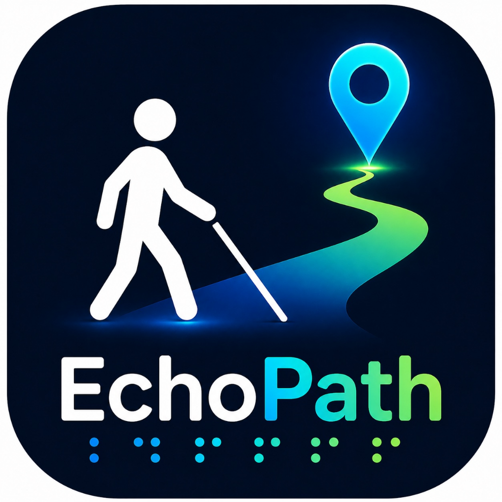

Navigate
Plan journeys with walking, driving, taxi, bus and train options where appropriate, with Apple and Google navigation choices.
Riley Burrell Development
Apps. Games. Innovation.
EchoPath is an accessibility-first navigation and environmental awareness app designed for blind and low-vision users.
iOS TestFlight beta. Android closed beta applications are open.

Navigation, surroundings and accessible guidance in one app.
Designed around real journeys
EchoPath brings navigation, nearby-place awareness, Scene Detection, saved destinations and safety tools together in an interface built around accessible interaction.
Plan journeys with walking, driving, taxi, bus and train options where appropriate, with Apple and Google navigation choices.
Use Scene Detection and Search This Photo to investigate objects, text, colours, positions and scene context from a captured image.
Hear current location information together with nearby named places, then save destinations you want to return to.
Accessibility from the first decision
VoiceOver-friendly controls, spoken feedback, clear structure, large tap targets and non-colour-only communication are part of EchoPath’s foundation.
Read about accessibility →“Accessibility is not an extra mode in EchoPath. It shapes how the app is designed, tested and improved.”
Two platforms
The iPhone version is being tested through Apple TestFlight as version 1.0 is prepared for launch.
See iOSApproved testers can access EchoPath through Google Play closed testing.
How to apply for the Android betaBehind EchoPath
Riley Burrell Development creates accessibility-focused software with practical use, privacy and independent access at the centre of the work.
Read the development story →